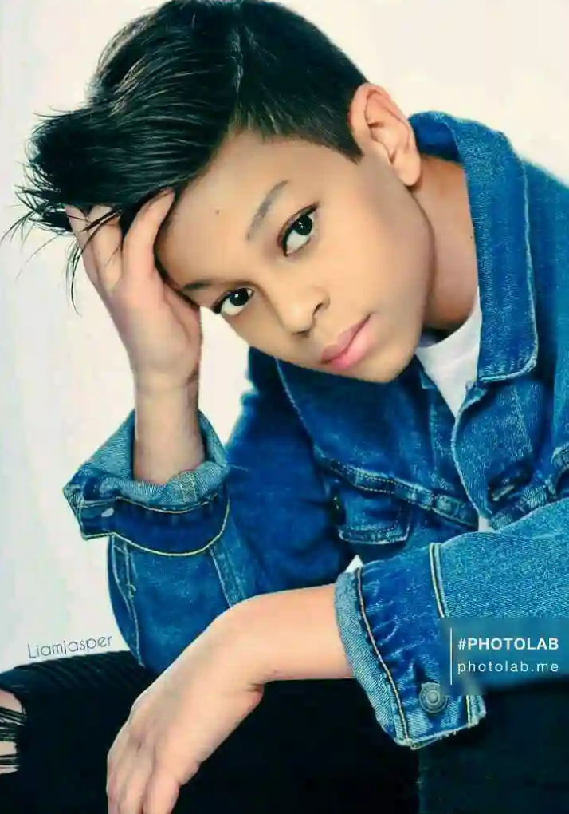

|  |
Wisdom Tobin,WizzySenior Programmer |
|---|
MY NAME:Wisdom.Tobin.Herbert --- MY AGE:13 --- MY CLASS:Jss3 --- MY SCHOOL:The King's College(UBE) --- MY SEX:Male --- MY DEPARTEMENT:Computer Programmer.
My name is Wisdom.Tobin you can also call me Wizzy,i am a programmer. I am from okrika,Rivers State,Nigeria. I am a programmer of MA lesson and also member of some programming programs online. My favourite sport are-Soccer,Basket ball and Tennis ball game.